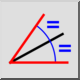
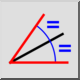
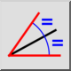
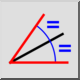

Winkelhalbierende
Werkzeugleiste / Symbol:
 

Menü: Zeichnen > Linie > Winkelhalbierende
Tastenkürzel: L, B
Kommandos: linebisector | bisector | lb
Werkzeugleiste / Symbol:
 

Menü: Zeichnen > Linie > Winkelhalbierende
Tastenkürzel: L, B
Kommandos: linebisector | bisector | lb
Konstruiert Winkelhalbierenden zwischen zwei Linien.